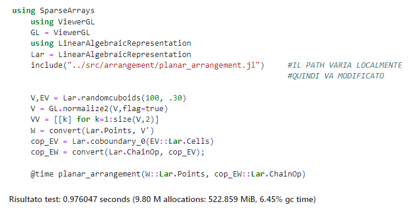
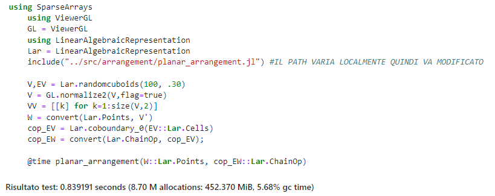

Analisi delle Prestazioni
Nel presente capitolo vengono analizzate le prestazioni prima e dopo le modifiche implementate. In particolare, sono stati misurati i tempi di esecuzione del codice iniziale. In seguito, sono state apportate modifiche al codice al fine di gestire i 'colli di bottiglia' individuati. Infine, sono stati ricalcolati i tempi di esecuzione dell'algoritmo e confrontati con quelli di partenza.
Situazione di partenza

Test Intermedi
Dopo aver implementato il multithreading sono stati eseguiti dei test con 2 e 4 thread. Tuttavia, i tempi di esecuzione risultavano ancora instabili e non vi erano miglioramenti significativi.
Risultato Finale
Il test finale è stato eseguito con 8 thread portando ai seguenti risultati:

Come si evince dalla figura i tempi sono migliorati di circa il 15%.